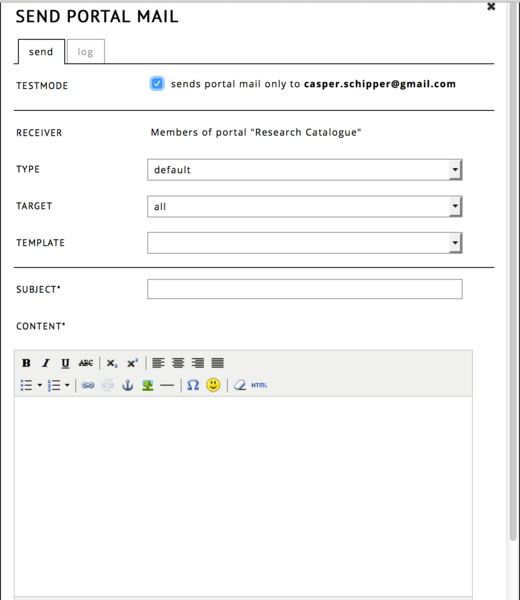
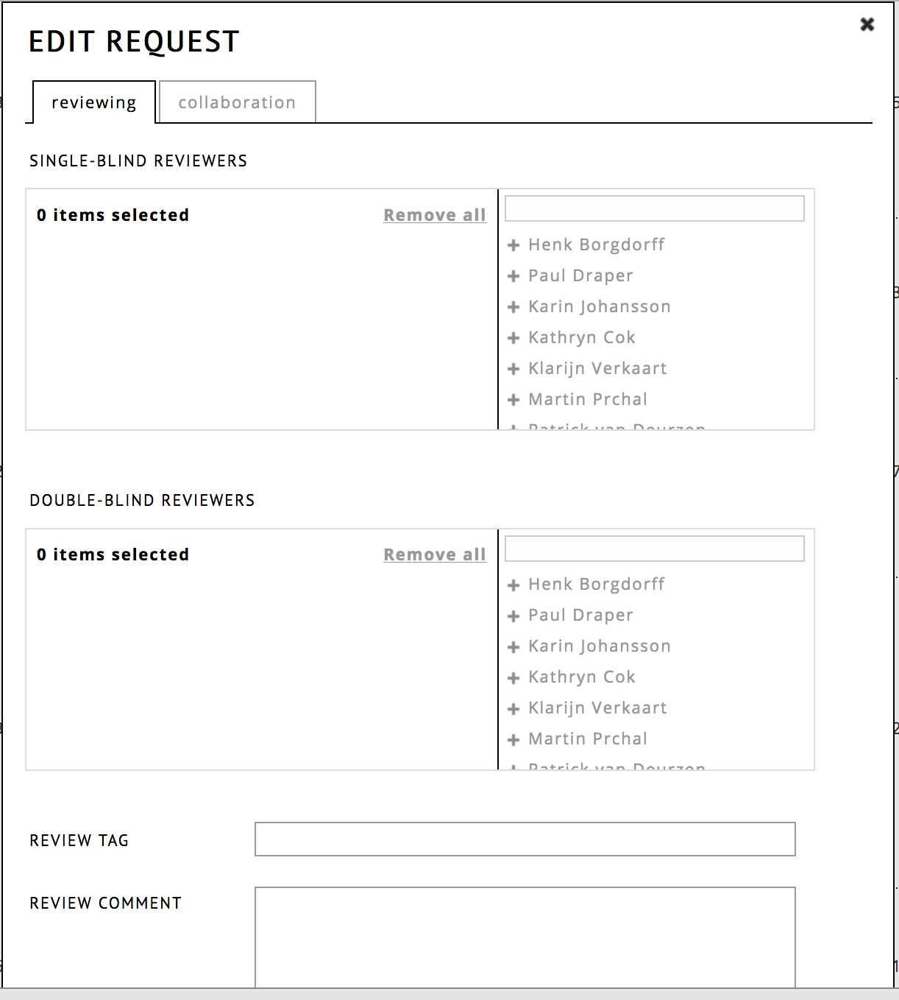
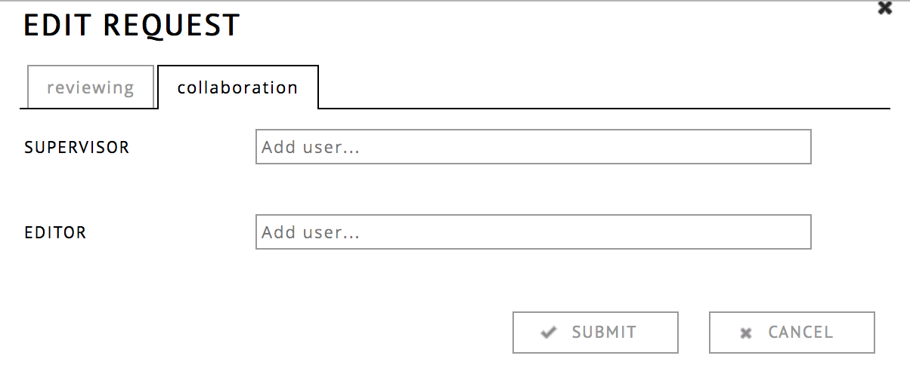

the RC allows you to create a detailed public profile and gives you the opportunity to structure your objects in groups. Your profile where you create different types of objects and present yourself and your research content.
Next to the presentations of your artistic works and objects in the RC, it is possible to upload your own CV as PDF. In it, you can e.g. present your academic background or your list of publications without adding everything to your profile page.
You can switch between your profile's editing mode (private) and your profile as the general public sees it. Click on 'my profile' for the editing mode and - below your image - click 'view public profile' to hide all controls, grouping options and private research.

You can also add your degrees to your profile. Enter the name, the level, the dates and the institution of your degree and link it via the relations-tab to projects, expositions or works that you created in support for your degree.
Here you can add a short text biography/CV, that other RC users will see when they visit your profile.
add grouping gives you the opportunity to create custom groups. You can combine objects of one theme you‘re working on or group objects of the same type - it's up to you. To add a new group press add grouping and type the name of the group you want to add. You can sort your objects via drag and drop and place them into a different order or into different groups, even. Click and drag a grouping to change the order of the groups. On the right of a group, press edit to edit the name of the group. Only custom groups can be deleted. If you have only one filled group, the group title will not be shown on your public profile. Empty groups will also not be shown, but be kept for future use.
create exposition is equivalent to the previous 'add research' command. On click, you will be able to create your own online page for your research.
It is also possible to import expositions from your archive. Note that only expositions exported from the RC can be imported.
A work is completed, autarchic creation. You can add your work's metadata, also in the enhanced meta. Here you can indicate the place of your work, the country or the material, technique or the format. It can be either a single file, or a collection of files.
For collaborations, you can choose between co-authors, contributors and supervisors. For full supervision functionality (leaving notes etc...), it is prefered to embed the work in an exposition.
A new feature is the RELATIONS-TAB. Here you can choose to relate a work to other objects.
A project is a container within which works or expositions may be produced. It may or may not be funded. Using the RELATIONS-TAB, those works or expositions can be linked to the project.
In case your project belongs to a degree, you can add ECTS-points.
You can decide if you want to have a group in your public profile visible or not.
The visibilty is ON by default. To switch it off click on the little circle on the right side of the long underline of the groups name. If the circle is thin, the group will not be shown on your public profile.
The button consult this exposition connects you to the entry page of your exposition.
This is the same as the preview version in the workspace.
object menu, also known as hamburger menu ☰
To access the menu, click on the ☰ symbol, located in the bottom right corner of an object (expositions or works). Some options are only available to the author of the object.
Change layout Change the size of an object on the profile.
Edit workspace Go to the workspace editor of this exposition.
Edit details Change the meta data of your exposition, and control collaboration with other users.
Share Change who can see and access this item.
Self-publish Turn an exposition into a fixed state.
Add to shortcut Add a compact link to this object on the top of your list.
Please note that publishing is a one-way action, once published one can not unpublish. If you want to keep the option of removing an exposition, do not use this option.
Submit for publication Submit an exposition to a portal for publication.
Add to shortcut Make a shortcut add the top of your profile.
Connect to portal Send a connection request to a portal.
Export Export an exposition for further distribution.
Delete Delete an exposition or work from the catalogue.

This dialogue gives you the option of choosing the size of an object in your profile.
Depending on the size, the abstract and additional informations may be reduced or even hidden. Sizing objects differently allows to focus a reader's attention to important objects as well as improving the overall readability of your profile.
Four layout-templates are possible:
tall and across both columns
tall but only one column wide
short and only one column wide, the smalles possible size
short and across both columns
In RC you have three different options to view your exposition. Theese options are strong connected with the way how you work with the different tools on RC.
In general we can differ the workspace view and the preview in browser.
The workspace view is only for you and your collaborators or co-authors and shows you all tools, all files you have uploaded and the way you structure and layout your work on one or more weaves in the framing of the editor. The preview is the way how people from the RC community or the web can see your research in there browsers. It necessary to test the preview in different browsers, because every browser has its own way to display the html-code from your side. RC is mainly supporting the standard-browsers Mozilla Firefox, Safari, Chrome and Internet Explorer.
The preview gives you the opportunity to proof the layout of your exposition in the browser. Press PREVIEW on top-right and the preview will start in a new window or tab. By mousing on the top of the exposition in menue-bar will drop down.
Home is your general-navigator. All pages that are named in the meta-tab table of content are listet here. The list will be automatically finished with a link to your personal profile or the profiles of the collaborators and/ or co-authors.
Naviagation is a grafical in-side-navigator. It shows all content off the present page with frames. So you and your reader have an overview about the dimensions of each page and the content that is presented on each page.
When you add a new research, object or work, you can give them a little abstract, this is displayed under "abstract" in the menue-bar. It's a summary of your work or the question you are working or researching on. It's possible to save this abstract bilingual. Find out how here.
By mousing over your account-name and the title of your research, a little window with metainformation will drop-down. The link which is shown, is the hyperlink of your exposition, with the page and the exact coordinates of the content you are looking at in this moment. This URL can be used to generated the hyperlink for intern hyperlinking or naviagation as well as the source you want your work to cite with in external contextes.
Reviewing is strongly connected with the note tool and is made for the communication between the autor(s) and the reviewer during the reviewing-process. This option is not available when the exposition is published.
Shows the latest and previous comments to your exposition from the RC community.
Terms of use leeds you and your readers to the terms of use of this and any expositions on RC passed by the Society for Artistic Research (SAR)
The note-view is strongly connected to the note-tool of RC. Notes is conceived as a possibilty to make small conversations about specific problems directly at the mentioned content, like sticky notes. Because the usage of notes can be confusing from time to time we developed the note-view. To activate the note-view click on the buttons top-right on the view-options. A new window or tab will open and show you all notes listes aside the layout and the other content of your exposition. You can sort and filter the view with the filter options on the top of the browser. You can sort by the owner or by the assignee of the note or of the resolution, which means, if the note is open to clear or is already cleared.
Next to each note you can find the status-options from the note. Who created this note and who is responsible for clearance (it's necessary when there are more than to authors in the project)? You can limit the clearance to a date and close open notes with the status pull-down-menue. All this options can help you to work efficient and purposeful with the RC.
Sometimes it can be confusing to retrace all the changes in one or more text(s) while editing the exposition. The text-view shields the texts from the grafic and media-content from your exposition. You can activate the the text-view by clicking on the button on the view-options. You have the opportunity to show or hide the changes of a text. You can also sort the items and open the html-editor to make changes directly in the text-view.
You can close both views by clicking on "close vote view" or "close text view" top-right.
The text tool is for quickly adding text.
The text tool has two states: when in active state you can change the text, if you click outside, you can move the object and change the size of the outer box. Double click inside to start editing the text again. Content is saved as soon as you exit the text editing state.
If you right click the text tool, you can find some extra edit options under edit.
You can also (while hovering over a text tool with your mouse) click the ☰ icon and choose edit.
Compared to the html tool, the text tool allows you to edit your text directly in the page, while the html tool works within a dialog. If you need more styling options, use the html-tool. A text tool can be converted to an HTML tool via the menu option convert to HTML tool.
For a visual tutorial see this link.
If a text is longer than its frame on the weave, a scrollbar is generated automatically. You can control the visibility of the scrollbar in options. The default setting is automatic.
The html tool is for advanced text editing. It is a what-you-is-what-you-get rich text editor. Unlike the text tool, you can only edit its content in a dialog box.

Text is edited in the media tab. To preformat the text, choose your settings before typing. The style can also be edited after typing by selecting either the whole page or sections of the page and changing the formatting options as required.
! important: If you copy-paste your text from Word, Pages, LibreOffice, Google Docs or any other text editor,
please note that not all fonts are available on every computer. Only the fonts that are listed in the RC editor will be rendered correctly for all readers (even if they do not have the font installed on their computer). A better practice is to import the text without any formatting.
You can choose standard type formats such as bold, italic, or underline, as well as adjusting text alignment, font, and size.
To enlarge the palette, click on the first button, show/hide toolbars. Here you will find different options for further formats, such as lists, enumerations, citations. It is also possible to create hyperlinks (chain symbol), or to set anchors for navigation. If you hover over an icon you can get a short text description of the function. The top right button opens the editor in fullscreen.

You can add pictures or further HTML materials such as i-frames (the embedding of HTML pictures or video is not possible with uploaded audio-visual content, which means that you have to publish a URL from an external server to paste it into the dialog). You can also choose the colour or the background of the text using the colour tools, insert symbols and tables, and control the edits with the show changes option.
If a text is longer than its frame on the weave, a scrollbar is generated automatically. You can control the visibility of the scrollbar in options. The default setting is automatic.
If you want to reuse the content of a html tool, you can create your own templates. This function is found in the media tab. After finishing the edit of your template, click save as new template and give the template a name in the dialog box that appears. To load a template, click load template and choose one from the list in the dialog box.
Finally, you have to quit the dialog. If everything is the way you want it, choose submit and the text field will be loaded on the weave. To discard changes to the content, cancel the dialog box. If you want to delete the whole HTML field, including all content in it, click delete. Unintended deletions are restorable via commands – restore deleted tools."In that location you can also learn how to restore deleted tools.
As with the other tools, you can use the video tool by dragging it from the tool palette and dropping it onto the weave.
In the dialog box that appears you have the opportunity to add items from your computer or select items from the "simple media" folder.
At the moment, RC supports the following formats: avi, mov, mp4, mpg video container formats; dv1394, h.264, mpeg2, mpeg1, mjepeg video codec formats.
Please note also our general format information in FAQ 2.5: http://www.researchcatalogue.net/portal/faq
To add an item, choose "add" and upload the file from your desktop to the RC servers. All videos uploaded in this way will also be added to the simple media tab. Next, name the file and make a declaration of the copyright holder. After adding media, you can edit the style of the audio player with the html style standards and choose between different play and display options.
Please note, all media will be compressed to a smaller size, this is called 'transcoding'. This process takes time. During the 'transcoding' the file name is greyed out in your simple media. After the transcoding process is finished you will receive an email notification to tell you that your media is transcoded and ready for use. Please check the inbox of the address you use to log in. The message is also sent to the internal messenger. For further information and technical questions see FAQ 2.6:
http://www.researchcatalogue.net/portal/faq or contact the RC User Support.
We highly recommend using low-size video files. People without a fast internet connection will not watch videos when they are too big to stream fluently. If your file is extremely large, you may want to convert it using Handbrake, FFMpeg or another video compression tool to make it smaller.
The video player has a couple of options:
loop
Loops the video when it reaches the end.
autoplay
The player starts to run the file when the page is loaded.
stop other players
If you are using multiple video players on the same weave and your page is quite big, visitors may find it helpful if you prevent overlapping by defining which player is playing. With this option selected, all players (video player, audio player on slideshows, other audio players) will stop when the selected player is running a file. When multiplaying is intended, we encourage you to use the play tool.
display minimal
When checked, the player constists of only the play button and the process bar.
As in the picture tool, if it is necessary to provide textual information on the video file you can choose to display plain text or copyright information that will appear when the mouse hovers over the item.
You can also use the play tool to synchronize certain video and audio tools.
The play tool is designed to synchronize the playback of selected video and audio tools on the same weave. With this tool one can create a single control for playing back various media files at the same time. This can, for example, be used to document video installations with multiple screens and allows playing back synchronized combinations of musical voices and audio tracks. The play tool displays an image which can be clicked and functions as play and pause button. Clicking the image will start the playback of the selected audio and video files. While playing the tool another image will be displayed instead. Clicking this image will pause the players.
In the media tab one can upload two image files. One image will be the playplaceholder, i.e.clicking the image will initiate the playback of the selected files. The other image will be the pauseplaceholder, i.e. clicking this image will pause the selected audio and video files on the weave.
In the options tab one can select from among all audio and video files on the weave. These must have been uploaded first with the audio and video tools. The selected files will be controlled with the play tool. The option “pause other players when playing” will ensure that only the selected media files will be played back.
To add a picture, drag and drop the picture icon from the tool palette to the weave. As with all other tools, a pop-up dialog starts automatically and gives you the choice between "selecting" or "adding" an item.
You can upload to RC pictures and graphics in the following formats:
jpg, png, tiff, gif, psd, tga, bmp.
For uploading PDFs, please use the PDF tool.
To add an item, choose "add" and upload the object from your desktop to the RC servers. Next, name the file and make a declaration of the copyright holder. Once an image is uploaded it is also automatically added to the simple media tab.
There are different options concerning the properties of a picture and its position in relation to other objects. In the "position" menu in "options," you can specify how the picture relates to other objects: choose between contain, cover, fit, and auto. contain is the default for this field. You also have the option to define the position of the picture in the picture frame (which is not visible in the browser unless you give it a specific style). The position is preset to centre-centre.
In settings you are able to lock the aspect ratio (the ratio from the width to the height), and you can allow readers to enlarge the image by activating the checkbox "on click open image in popup." If you want to use a picture as a hyperlink, paste a URL into the field on click open link. It is also possible to show specific information when the cursor is moved over a picture. If the picture is set as a hyperlink, you could for example set plain text to appear that describes where the hyperlink goes to ("more," "...further information," "... go to," "introduction," "summary," etc.). In cases where the picture is of an artwork, or if the picture is the artwork, you could provide the title of the work and the name of the copyright holder. This is also possible by using the option copyright & plain text. Please note, you can't change the copyright in the "edit picture" tool. To change the name or the copyright text, go to the item in simple media and click edit (also double click) to open the edit media dialog.
The slideshow tool allows you to create a gallery with pictures and graphics that can be displayed in a loop. You can start the slideshow in autoplay and you can add an audio file to each picture of the slideshow.
Drag and drop the slideshow icon to the weave to start the edit dialog box.
To be able to select media you first have to upload an item into simple media. To add an item, choose add and upload the object from your desktop to the RC servers. Next, name the file and make a declaration of the copyright holder. After adding the file, you can edit the style of the picture with the html style standards. To add a sound file to the slide, the file has first to be uploaded to simple media.
In options you can define the position of the picture within the frame. This is important when you are using pictures with different dimensions. In settings it is possible to choose to loop the slideshow. If loop option is checked, after the final slide the slideshow will continue with the first slide again. You can choose whether to hide the navigation bar or whether to give the reader the option to enlarge the picture with a click on the picture in your weave.
In automate you can set the autoplay to:
When choosing autoplay you must define the speed the slide will change. You can customise the duration of each slide (speed per slide) or let each slide change at the default speed.
As mentioned before, you can append audio files to each slide. Please note, you first have to upload the file into your simple media folder. In options, audio you can regulate the time of a crossfade (one audio file fades out while a second fades in at a specified time). You can also choose the fade duration and the timeout of an audio file.
The play shape tool is made for a simple usage of grafic elements in the RC. You can generate forms that could structure your layout or helps you to build up an own navigation. At the moment you can create rectangles or circles or lines. You can choose if they're filled or not so you can create a frame from the rectangle and a ring from the circle. You have also the possibility to specify the strongness of the frame and operate with the opacity of the elements. Next to this there are four types of arrows (left, right, up, down). You can resize the element on the weave via pulling or pushing the green frame. The yellow point offers you to turn the element.
As with the other tools, use the audio tool by dragging and dropping the icon from the tool palette to the weave. A pop-up dialog starts automatically and gives you the choice between "selecting" or "adding" an item.
You can upload to RC pictures and graphics in the following formats: ogg, wav, mov, au, mp4 audio container formats; mp2, mp3, aac, pcm a-law, flac audio codec formats.
Please also see our general format information in FAQ 2.5: http://www.researchcatalogue.net/portal/faq
To select media they must first have been uploaded into "simple media." To add an item, choose "add" and upload the object from your desktop to the RC servers. Next, name the file and make a declaration of the copyright holder. After adding the file, you can edit the style of the audio player with the html style standards and choose between different play and display options.
Please note, to be used on our server, all media will be transcoded from the RC. This takes some time. During the transcoding process, the file name is greyed out in simple media. After the transcoding process is finished you will receive an email notification that your media is transcoded and ready for use. Please check the inbox of the address you use to log in. The message is also sent to the internal messenger. For further information and technical questions see FAQ 2.6:
http://www.researchcatalogue.net/portal/faq or contact the RC User Support.
The audio player has a number of settings:
loop
Will loop the playback when it reaches the end of the file.
autoplay
The player starts to run the file when the page is loaded.
stop other players
If you are using multiple audio (or video) players on the same weave and your page is quite big, visitors may find it helpful if you prevent overlapping by defining which player is playing. With this option selected, all players (video player, audio player on slideshows, other audio players) will stop when the selected player is running a file. When simultanious playback is intended, it may be helpful to use the play tool.
You can also define some visual player settings. You can hide the whole menu bar or you can set the visibility of the volume or define if you want a player with as few options as possible. When "display minimal" is checked, the player consists only of the play button and the process bar.
As in the picture tool, if it is necessary to give textual information about the sound file, you can edit so that plain text or copyright information will be displayed when the mouse hovers over the item.
The PDF tools give you the opportunity to attach longer text documents to the RC. Sometimes it is neither convenient nor practical to present long text passages on the internet. If you nevertheless need or want to attach documents or materials to your exposition, the pdf tool can be very useful.
After dragging the icon to the weave, you can upload the pdf in the "edit pdf" tool. You can also choose a pdf from "simple media" if it has been uploaded previously. An alternative way to upload is to click the "+" below "simple media."
In the uploading dialog box, you can choose to represent the PDF in your exposition either with a preview image of the file or with a different picture.
RC gives you and your reader the possibility to read the PDF directly in the browser if the browser supports this. To use this option check "display in browser" in option > settings of the "edit pdf" tool dialog box. As in the picture tool, you can provide further information using the hover option. To do this, select one of the options in the "show on hover" pull-down menu. In addition, you can create a plain text to be displayed when the reader's mouse hovers over the PDF preview. To use this, choose "plain text" or "copyright & plain text" from the pull-down menu and write your text in the text field below.
Note is a tool that allows you to organize your work on RC. You can use it as sticky note, to make some notes for yourself while the editing of your research or you can use it as a communication tool for the collaborators of the project. The handling is very easy: Drag the note from the tool-pallett and drag it on the weave. You can write directly on the note without opening a new edit-window. Each note has a time-stamp which is generated when the note is sticked on the weave. Please check also the option of the note-view which is described here.
There you can define, who is responsible for the content (a change or revision, correction) of the note and you can set a date this work should be done.
Notes are visible on the preview as well. If it is not part of your project please check, that all notes are removed from the weave.
You can use the buttons to directly add the basic stylings, eg. highlight it with bold or italic font or structure it with numerations or lists. You can change the font-family and in- or decrease the indent. You can also insert a link.
"History" provides a log of all changes that have been made to the tool. If you have unintentionally deleted a tool, you can restore it using "restore deleted tools" in the commands.

The style tab allows you to set the way an object looks on the outside.
Click on the small ">" to open one of these sections:
The style tab only sets the basic (mostly external) style of the object, text markup is done within the text or html tools.
The history tab gives you the posibility to change the content within the tool to an older version.
The versions of a text object are created each time you have clicked outside it (and the three animated dots show inside). With the html tool, a version is created each time you clicked submit.
contain extra tools and settings for use in the workspace editor.
The overview displays a small window on the right side of the editor. It is useful for navigation on the weave while editing. It also shows objects that might otherwise be invisible. It will be not part of your exposition in the preview. In the browser-view of your research (= preview) there is an own navigation window in the menu-bar, which is similar to the overview in commands.
Below the map there is a list of all the tools (called layers) that are currently present in the presentation.
When you click on one, the editor automatically scrolls to that tool. You can edit, lock or delete a tool with the buttons below the list.
The weave has a grid in the background which makes it easy to define positions. This grid-size is default set by 5x5 px. You can easely change the size of the grid by clicking the pull-down-menu and choose on of the options from the list. You can also remove the grid by switching the size to 'invisible'.
With snap to grid you activate the mode, that the item is not placeable fluently all over the weave. In dependence of the grid size the frame snaps into the grid. This can help with allignment.
A rather unique feature of RC is the absolute positioning of items of the weave. With this you can define on the level of each pixel, where you want to have your text, picture, sound- or video player. This makes it possible to work very free with the weave and gives you the opportunity to navigate and link to a specific position on the weave.
With set default position you can set the entrance position of your page (which is 0;0 top/left by default) to any other position of the weave. Scroll to the position you want in your workspace editor press set default position.
Maybe you want to link to a special position on the weave and you have to generate the URL for this. After browsing to the coordinates or to the item you can generate the URL by clicking show current position. You can copy the URL and use it for hyperlinking, anchoring or for publishing.
Every tool or item on the weave is deletable via using the rightclick or doubleclicking the item and use the button delete tool.
Sometimes it's necessary to restore a tool. Because RC is a browser-based engine, you can't use the undo-option of your browser or the shortcut on your keyboard. Every item has its own history which is listed on the tab history in the edit-tool-dialogue. Here you have the option restore the stadium of the item. If the item or tool is deleted of couse it's not possible to use this because the item won't be any longer on the weave. With restore deleted tools you have the option to get back deleted tools. After clicking it, there will be a list with all items. Choose the right one and click on restore and the item will be reintegrate in the exposition.
When you are working together on a research, you can use the command 'send collaboration message' to commuicate with the co-authors or contributors inside the RC. Open the command by clicking on the button and you will find a message-window. In the upper part you can choose the partners you want to write. Select them by clicking on the + behind theire names.
Below you find a html-based message window, where you can write your message. You can also attach files but please note, that this is only possible, when you have a URL (e.g. public link of your cloudspace) of this file. It's not possible to attach files from the simple-media.
When one moves the mouse cursor to the top of an exposition a menu bar
appears. The menu bar displays the title of the exposition and the
name of its author as well as a series of drop down menus, which allow
one to navigate the current page (or "weave") and the exposition as a
whole. The first item ("home") opens the table of content, which can
be freely designed by the author (see the next section on how to enter
entries into the table of content). The second item ("navigation")
displays a schematic overview of the current page. It outlines all
tools on the page, their size and position. By moving the red
rectangle, which displays the currently visible part of the weave, one
can navigate the page and alter the current selection.
The table of content[^1] is designed to facilitate the navigation
through an exposition. In order to edit the table of content and enter
entries click on the title of your exposition in the editor (one can
also open this window by going to the exposition on the profile page
and clicking "edit details"). This opens a dialogue window titled
"Edit Research." The second tab ("table of content") of this window
contains a series of entries. To make a new entry select the page (or
"weave") that this item in the table of content is supposed to link to
from the pull down menu and enter a title for this entry to be
displayed in the table of content. Moreover one can choose a specific
position within the selected page. The "X-Coord" is the distance in
pixels from the left margin of the exposition and the "Y-Coord" is the
distance in pixels from the top margin (See the section on "Commands"
for more information on obtaining position information.) The table of
content thus not only allows structuring expositions by creating a
series of weaves, but also by using various locations within one
weave.
It is possible to create hyperlinks[^2] between pages (or "weaves") of an
exposition and within a single page. In order to create a link to a
different page, select the target weave in the editor. Select the tab
"Commands" on the right hand side and click on "show current
position." This will display the URL of the target page. Copy the URL
into the clipboard (Ctrl-C/Cmd-C). Move the page where you want to
create the link. Create an HTML-Tool (see the section on the HTML-Tool
for more information) and enter the text to be displayed and selected
it. By right-clicking open the context menu and select "Insert/Edit
Link," paste the copied URL into the text field labeled "Link URL" and
close the HTML-Tool by clicking "Submit." One can also create a link
to a different position within the same page by moving to this
position (see also the next section on the overview function) and
following the same procedure.
Within the "Commands" tab on the right-hand side of the editor there
is a checkbox labeled "Overview." Clicking the checkbox will open and
close an a schematic overview on the right-hand side of the
editor. The overview outlines all tools on the page, their size and
position. By moving the red rectangle, which displays the currently
visible part of the weave, one can navigate the page and alter the
current selection.
There are number of different ways to share and publish your work on
the RC. This functionality can be accessed using the object menu (i.e. clicking
the "≡"-icon) for the given work or exposition on the My Profile page.
Works and expositions can be shared. They can be made public (visible
to anyone on the internet), private, or visible to RC users only. As
long as the object has not been published it remains editable.
Self-publishing makes an exposition no longer editable and publicly visible.
Expositions can be submitted to portals (such as journals) for
publication. Click "submit unlimited publication to" and select the
portal. While the exposition is in review it can no longer be
edited. The portal admin or editor will contact you regarding the
reviewing process.
A work or exposition can be connected to a portal without being
published by the portal. The portal admin will receive a notification
and has to confirm the connection. Once the connection has been
approved it will be shown in the object's metadata and the object may
appear on the portal page and portal feeds. Connected works may for example
accompany a published exposition or represent a connected event.
It is possible to "follow" other users, portals, and objects such as
expositions and works. Once you are logged in you will see "follow"
links in the bottom right corner of objects displayed on the front
page, other user's pages and other places on the RC. "Follow" links
also appear on user and portal profile pages. Once you follow a user,
portal, or object new publications, edits, comments etc. will be
displayed on the "FEEDS" page. Clicking the wrench icon opens up a
dialog in which you can adjust the precise information you want to see
for each user, portal or object you follow.
You can search the RC by using the search field in the top right
corner. Moreover you can use the "advanced search" functionality,
which allows for filtered searches and and searches according to
specific criteria such as object type, keywords, authors, etc.
The Research Catalogue allows you to collaborate on a research exposition with multiple users. An author of an exposition can invite collaborators through the collaboration tab of the exposition: click the ≡ icon (1) and 'edit details' (2) next to the research on your profile (or click on the name of your exposition in the exposition workspace), choose 'collaboration', search for the user you want to coöperate with and add him by clicking on their name. The users that were added will show up as a list below the field. After clicking submit, collaborators will receive an invitation from you in their message-box which they can accept or decline. When accepting the invitation, the collaborator will have access to your exposition workspace and he will be able to edit it.

If you want to remove a collaborator, click the x behind their name in the field they were added. If you remove a supervisor, the supervisor will receive a requist to remove them.

Note: If a users name in the list is enclosed in brackets ( [ name ] ), it means that the invitation is sent succesfully, but has not been accepted yet by the receiver.
There are 3 types of collaborators :
While collaborating on an exposition, there are several ways of communicating with each other
Using the note tool
Notes are the RC equivalent of yellow post it notes. You can simply drag one from the toolbar onto the exposition workspace. See also the note tool helpfile.
Send collaboration message
You can send a direct text message to your collaborator using the Send collaboration message found under the commands_ tab.
Posting a comment
In expositions where you are not a collaborator, you can still leave comments by going to the top bar of the exposition and clicking the Comments.
It is possible to create footnotes and popover weaves[^1] in the text, HTML and picture tools.[^2] These are displayed when the RC user reading the exposition clicks the footnote link or, depending on the settings, when he or she mouse the mouse pointer over the link. This functionality makes it possible to create footnotes in texts, but also create popovers of any size containing RC objects of any type. There are a number of different ways of creating footnotes.
In order to create a footnote in the text or HTML tool one selects some text, which will be the footnote link and clicks the "Insert/Edit Link or Footnote" menu item (see image).

A new footnote can be create by using the left tab in the appearing
dialog window. In this window one can set:

Finally, click "Add Footnote" to confirm and create the footnote, which will subsequently appear in the list of footnotes on the left side of the screen.

All footnotes are listed in the "Footnotes" tab on the left hand side.

There are three icons displayed to the right of the title of each footnote. The first icon opens a window which allows editing the title, size, and styling of the footnote. The second icon (the wrench) opens up the footnote in the weave editor. Here one can edit the footnote just like any other weave. One can leave the footnote weave editor by clicking the link "back to main weave" displayed to the left of the main tab. (see image).

Instead of using text as footnote links it is also possible to use numbered links. The numbers will be filled in and adjusted automatically. In order to create auto-numbered footnotes create a footnote in the text or HTML tool as described above but without selecting any text. An "x" will be inserted where the cursor is placed. This "x" will be replaced by the correct number when the text is displayed.

The numbering starts at 1 and encompasses all text and HTML objects on the weave. Numbering is performed by object and proceeds from the top and left to the bottom and right of the page.
It is also possible to use images as links to footnotes. When clicking on the image or moving over it with the mouse cursor the popover will be show. In order to use an image as a footnote click the "≡"-icon on the bottom right of the image (or right click the image) in order to open the context menu. Click the item "add footnote" from the context menu and fill in the appearing dialog window.
To reach the administration functionalities of the RC website, click on administration, located in the top right corner. To return to your own profile, you can click on the Research Catalogue logo. Only portal admins have access to these pages.

There are 5 pages to manage content for portal admins:
User
Adding, removing and editing user information to this portal
Portal
Portal settings, reviewers, sending portal mails
Research
Management of connected expositions
Connection Requests
Management of connection requests
Reviewing
Review process of expositions and objects that are waiting to be published
If you are an admin in multiple portals, you can switch between them in the top right corner of the site, through the drop down menu.

| Action | Icon |
|---|---|
| Add a user |  |
| Edit a user |  |
| Remove a user |  |
| Login as a user |

Change the name, alias, email and password (optional).
An administrator can also change these fields without having to change the password (by leaving the field empty).

This controls to which portals a user is added. A user can be added to multiple portals at once. Portals which are selected are marked by a gray background.

When the option is turned on, the user cannot create any content. The can still become supervisors or read expositions.

Here you can set which emails the user should receive.
The admins can log in as another user, for example to help resolve issues with a specific account. While logged in as another user, you will see a red bar on the top of your window that shows who you are and enables you to switch back to your own account. This feature is useful while helping somebody with issues specific to their account.
Keep in mind: you become this user in all the tabs of your browser window, so you would temporarly loose some of you admin permissions while navigating as this user.
The portal tab shows you which users are administrators on the portal.
It has 3 actions:
| Action | Icon |
|---|---|
| Portal mail |  |
| Edit portal settings | |
| Delete a portal | |

For advanced layout, you can use the HTML button. Please note that it is not recommended to use URI encoded images in email, since some email clients do not like this. Better practice is to have the images hosted somewhere externally and link form there using a

Here you can edit the basic information of the portal.
View text allows you to change the template that is used to display expositions on the portal page:
available placeholders: $author, $title, $portal, $edition, $published, $url, $now.

Here you can edit the various roles of the portal:

Here you can set the title of the issues (as in journal issues), one can use these in Reviewing.

Here you can set which objects can be submitted to the portal.
Here you can manage all research connected to the portal. Expositions are sorted per issue. Those without a publishing date, have not been published yet. There are a number of actions available:
| Action | Icon |
|---|---|
| Edit | |
| Unpublish | |
| Comment | |
| Block |
The unpublishing of expositions is not encuraged. Published expositions are supposed to be a permament reference, never to be deleted or changed. If an exposition is to be continuously changed or temporary, it is better to not publish, but simply set its sharing settings to public. When unpublishing an exposition make sure with the author of the exposition that there are no connected works that have been deleted since, otherwise it may be impossible to reconstruct the publication.
It is possible for users to connect a work or exposition to a portal. The works that have been accepted by an admin of the portal will be listed here.
Requests can simply be accepted V or rejected X.
The reviewing page allows managment of expositions that have been applied for publication by the author. Reviewers can be assigned to these works. There are two styles of reviewing: single blind or double blind. Single blind means that the author cannot see the reviewers. Double blind means that the reviewers cannot see each other.
Please note that within the KonCon portal, supervisor notes can be seen by reviewers.

Review tag and comment can be used by the admin to organize the current in review documents.
It is also possible to change supervisors in the collaboration tab. Please note that only the admin can change collaborators, the author cannot change anything during review.
;
Once the reviewing process is complete, there are three scopes in which the research can be published:
| Publish | Visibility |
|---|---|
| Restricted to portal | Only visible to members of the portal |
| Limited | Only visible to members of the RC |
| Unlimited | Visible to everyone |
If you reject a request for publication, it is possible to edit the standard message that is sent to the author of the exposition.